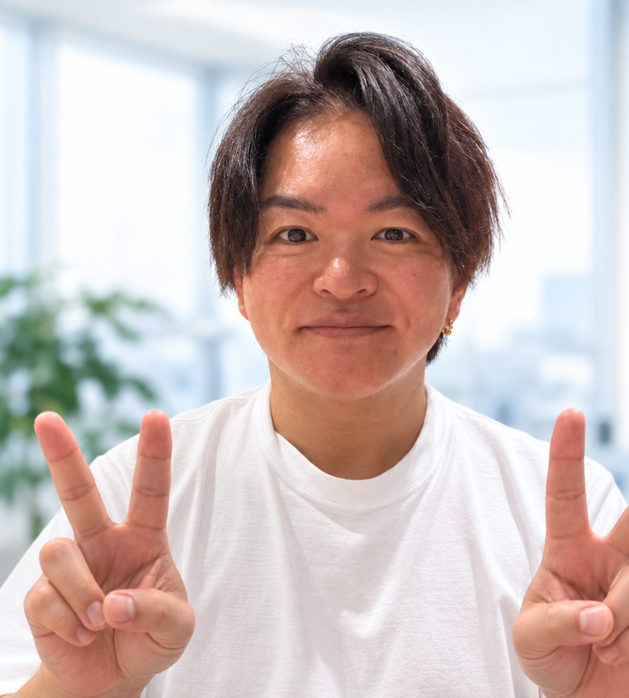

DEMO 01
回線デモ
法人向けの営業音声
音声を読み込めませんでした。ページを再読み込みしてお試しください。
※表示サンプルです。TELEMOの導入企業ではありません。
ロゴ掲載準備中
AIがどのように営業を行うのか、実際の音声でご確認いただけます。
DEMO 01
法人向けの営業音声
音声を読み込めませんでした。ページを再読み込みしてお試しください。
DEMO 02
法人向けの営業音声
音声を読み込めませんでした。ページを再読み込みしてお試しください。
DEMO 03
法人向けの営業音声
音声を読み込めませんでした。ページを再読み込みしてお試しください。
※実際の営業現場で使用しているTELEMOの営業音声です。
TELEMO

私は、ずっと営業をやってきました。
25歳で光通信に入社し、個人営業・責任者・統轄部長として、数多くの営業現場を経験。
独立後も、今なお自社でコールセンターを運営し、法人営業の最前線に立っています。
電子電話帳営業
フレッツ光
1,500件
アライアンス営業
フレッツ光
2,000件
CRM営業
U-NEXT
1,500件
CRM営業
WiMAX
2,000件
現在も、自社でコールセンターを運営し、
法人営業を現場で行っています。
トップ営業の話し方、間の取り方、切り返しのタイミング。
録音した営業音声を、相手の反応に合わせてAIが選びます。
現場で培った営業ノウハウを仕組みとして活用するために、TELEMOを生み出しました。
TELEMOは、電話をかけ、商品説明から断りへの切り返し、興味・意向の確認まで対応します。商材ごとの設計に応じて、契約のご案内や営業担当への引き継ぎまで行います。
貴社のリストをTELEMOに登録します。
AIが大量に自動で架電します。
受付から担当者につながります。
用意したトークで商品説明・ヒアリングを行います。
アウト返しとは、断りへの切り返しです。相手の反応に応じて説明し、再アプローチします。
テスクロは契約前の意向確認です。設計に応じて、契約の意思確認まで行います。
受注・見込み化し、必要に応じて人の営業担当へ引き継ぎます。
TELEMOは、業種や規模を問わず、さまざまな営業シーンでご活用いただけます。
これまでアプローチできなかった企業へ、効率的にリーチできます。
数万件規模のリストにも、安定した品質で架電が可能です。

受付から担当者への取り次ぎ、関心度の確認、営業担当への引き継ぎまで対応します。
外部に頼らず、自社でコントロールできる営業基盤を構築できます。
過去の顧客リストへ再アプローチし、眠っているニーズを発掘します。
一度接点のあった見込み顧客へ、適切なタイミングで再架電できます。
採用コストや教育コストを抑え、即戦力の営業活動を実現できます。
トップ営業のトークやノウハウを仕組み化し、組織全体で再現できます。
人は提案・商談に、AIは架電に。費用と対応範囲を合わせて、貴社に合う営業体制を考えます。
１人あたり
約 40万円／月
１時間
約25コール
１日（8時間）
約200コール
月間（22日稼働）
約4,400コール

１ID あたり
35万円／月
商材に合わせて
架電時間を設定
数万件規模の
リストに対応
データをもとに
改善し続けられる
※人による営業の費用・コール数は参考試算です。コール数は25コール／時 × 8時間／日 × 22日／月で算出。実際の架電数は運用条件によって異なります。
※5倍は月間架電量（22,000 ÷ 4,400）の比較であり、接続数・商談数・受注数の倍率を示すものではありません。
※TELEMOは初期費用20万円・月額35万円（税別）。
営業を強くする、6つの仕組み
01生声
トップアポインターの録音を活用し、相手の反応に合う音声をAIが選択。トーン・間・抑揚を活かした営業トークを行います。
02トークツリー
質問・回答・断りへの切り返し・会話の分岐を設計。商材に合わせてトークを組み立てます。
03データ分析・改善
録音・文字起こし・ログを残し、ダッシュボードで架電結果を可視化。会話が止まる場所を確かめ、次の改善につなげます。
04RW（Runaway）
AIだけでは判断が難しい会話は、内容を記録し、担当者へ通知。通話の経緯を確認した人が、折り返し・回答を行います。
05自動架電
数万件規模のリストにも、安定した品質で架電が可能です。新規営業から休眠顧客の掘り起こしまで、さまざまな営業シーンに対応します。
06伴走サポート
システムの提供だけでなく、営業のプロとしての知見をもとに、運用の改善まで伴走します。
TELEMOは、納品して終わるシステムではありません。
架電結果と通話音声を確認し、トークや会話の分岐を継続的に見直します。
TELEMOが
自動で大量に架電
架電結果を
リアルタイムで分析
実際の通話音声を
聞いて、現状を把握
データと音声から
課題を特定
トークツリー・
文言・分岐を最適化
改善した内容で
再度架電し、成果を伸ばす
架電・分析・トークの見直しを繰り返し、次の架電に反映します。
月額料金には、トーク設計・通話結果の分析・改善提案・運用サポートが含まれています。
トーク設計・シナリオ構築
初期設定・環境構築
月間 22,000 コール
月間22,000コール。未消化分は翌月へ繰り越せます（繰越分に上限はありません）。
営業のプロが改善まで伴走します。
通話結果をもとに、トークや会話の分岐を見直します。
※月間22,000コールは、2026年10月利用分より適用されます。
※1コールあたりの金額は月額35万円 ÷ 22,000コールで算出。初期費用を除きます。
初回商談から運用開始まで、最短約1ヶ月が目安です。専任担当が導入から伴走します。
※スケジュールは目安です。商材・設計内容・確認期間によって前後します。
当月に使用されなかったコール数は、翌月に自動で繰り越されます（繰越分に上限はありません）。
例 当月12,000コール使用の場合
月間22,000コールをご利用いただけます。未消化分は翌月へ繰り越せます（繰越分に上限はありません）。
業種や規模を問わずご利用いただけます。商材やターゲットに合わせて、トークや会話の分岐を設計します。
初回のヒアリングで商材や営業フローを確認し、質問・回答・会話の分岐を設計します。内容は貴社とすり合わせたうえでシステムに実装します。
通話の録音・文字起こし・ログを確認できます。架電結果はダッシュボードで確認でき、結果をもとに改善提案を行います。
はい。架電結果や通話音声を確認し、トークや会話の分岐を継続的に見直します。
契約期間は6ヶ月です。6ヶ月経過後は6ヶ月ごとの自動更新となります。
| 会社名 | GIGUUU株式会社 |
|---|---|
| 設立 | 2021年12月 |
| 代表者 | 青木 一平 |
| 所在地 | 東京都豊島区東池袋1-34-5 |
| 連絡先 | 03-4366-1687 |
| 事業内容 | プラットフォーム事業 代理店事業 |
| 代表サービス | SaaS営業支援「TELEMO」 |
| お問い合わせ | お問い合わせフォームへ → |
ここからは6つの仕組みをご案内します。